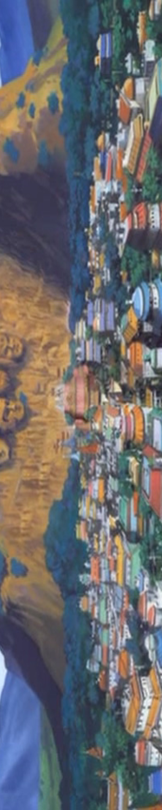
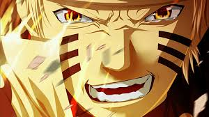

História de Naruto refere-se à cronologia de eventos que transcorrem no mundo ficcional onde se situa Naruto, uma série de mangá criada por Masashi Kishimoto e serializada na revista semanal Weekly Shōnen Jump desde 2015. A série se passa em um mundo em que ninjas podem usar o chakra para criar jutsus e realizar feitos super humanos aumentando suas habilidades físicas com taijutsu, usando ninjutsu para controlar os cinco elementos (fogo, vento, eletricidade, terra, água) ou Genjutsu para criar ilusões na mente de seu adversário. Esses ninjas se organizam e fundam Vilas Ocultas que recebem pedidos de missões de outros habitantes, as cinco maiores e mais importantes dessas vilas possuem um Kage como líder,que é o ninja mais forte e mais qualificado para o comando geral. Originalmente, os jutsus deveriam ser usados para pacificar o mundo, que era dominado pelo caos e o ódio, mas alguns ninjas passaram a criar e aprender jutsus para benefício próprio e até mesmo para fazer o mal,causando um desequilíbrio no mundo ninja. A ambição e a busca pelo poder absoluto faz com que às vezes algumas vilas se desentendam e provoquem uma guerra entre si, e alguns ninjas que desrespeitam as leis são expulsos e se tornam criminosos foragidos. Existem também os chamados bijuus, criaturas cheias de maldade e com um imenso poder que para não causar a destruição são seladas dentro de crianças recém-nascidas denominadas jinchuurikis, os jinchuurikis que aprendem a controlar o poder de seu bijuu tornam-se extremamente poderosos e perigosos, até para si mesmos.
A história principal da série segue Naruto Uzumaki e seus amigos, Sasuke Uchiha e Sakura Haruno, que juntos formam um time de três pessoas nomeado Time 7 e liderado por Kakashi Hatake. Como todos os times ninjas de todas as Vilas Ocultas, o Time 7 é encarregado de completar diversos pedidos de missões que chegam na vila. Com o tempo Naruto descobre que possui um dos nove bijuus selado dentro de seu corpo, a chamada Kyuubi, treina e adquire novas habilidades, faz novos companheiros, perde amigos, e encontra os mais perigosos ninjas, procurados por todas as vilas, como Orochimaru e a Akatsuki.
Índice [esconder]
1 Criação dos ninjas
2 Primeira Grande Guerra Ninja
3 Segunda Grande Guerra Ninja
4 Terceira Grande Guerra Ninja
5 Akatsuki e Sasuke
6 Quarta Grande Guerra Ninja
7 Referências
Criação dos ninjas[editar | editar código-fonte]
Em uma era de guerras e caos apareceu um sacerdote solitário com conhecimentos e habilidades grandes o suficiente para solucionar todos os mistérios e criar técnicas ninjas, os jutsus.[1]
Este sacerdote, tentando trazer a paz, viajou pelo mundo pregando uma religião que ele denominou "Nin-Shuu" o tempo se passou, e "Nin-Shuu" tornou-se "Ninjutsu". O Ninjutsu não era usado como arma mas como um guia para trazer paz. Sua religião empregava um ensinamento que ele chamou de "As Seis Transmigrações do Chakra e da Alma", e por isso ficou conhecido como Eremita dos Seis Caminhos. Ele proclamava: "Eu vim para trazer paz e salvação". Ele acreditava que chegaria uma Era onde os homens chegariam a um senso comum.[2]
O Eremita era chamado de salvador, um Messias, por seus grandes feitos, como a criação da Lua, e ele tinha o Rin'negan, que era conhecido como "Os Instrumentos dos Céus" por seus efeitos "divinos". Um de seus maiores feitos foi o selamento do Juubi, Bijuu de Dez Caudas, um monstro demoníaco com uma maldade enorme, em seu próprio corpo.
Como o Eremita dos Seis Caminhos estava tentando trazer paz ao mundo, seu tempo estava chegando ao fim, ele confiou a seus dois filhos os poderes e a vontade do caminho ninja pela paz, ao mais velho ele "nasceu" com os olhos do Rikudou Sennin e foi presenteado com um chakra poder espiritual, ele acreditou que a força era a chave para a paz, e ao mais novo, "nasceu" com o corpo do Eremita e lhe foi presenteado com força vital e energia física, ele acreditava que o amor era a chave para a paz. No leito de morte o Eremita escolheu seu sucessor, o seu filho mais novo. O irmão mais velho, não aceitando por acreditar que ele deveria ser o sucessor, atacou o irmão mais novo com ódio. O tempo passou, mas os descendentes desses dois irmãos continuaram a travar uma guerra de ódio, os descedentes do irmão mais velho foram chamados de Uchihas e o do irmão mais novo de Senjus.[3]
Antes de morrer o Eremita, temendo que o Juubi escapasse, usou todo o seu poder para separar o chakra da Juubi em nove partes e espalhá-los pelo mundo, e com o chakra removido, o corpo da Juubi foi selado novamente e explodido no céu, onde seu poder não poderia ser alcançado, criando a Lua.[4]
